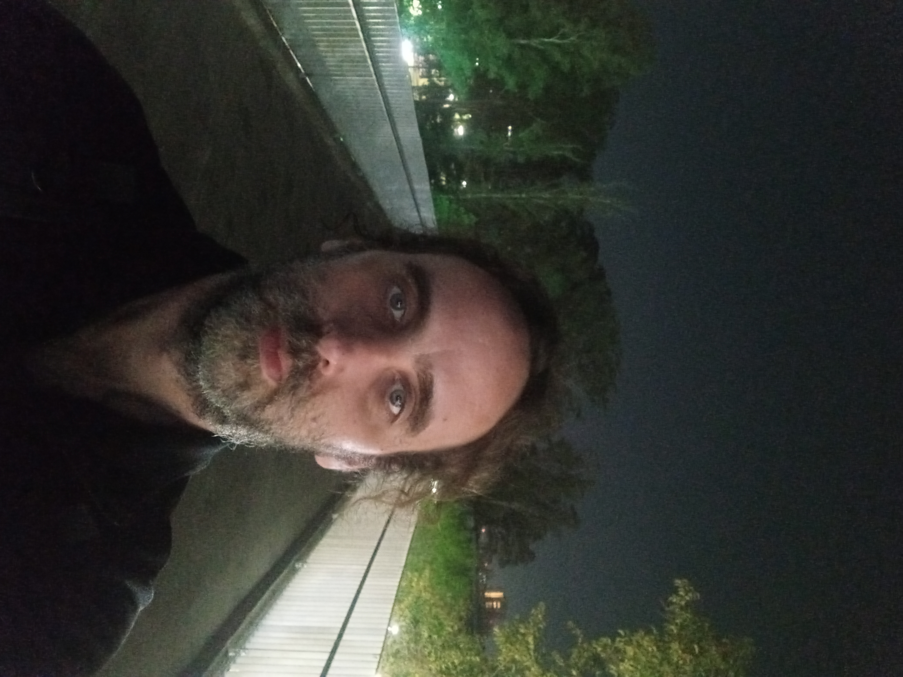
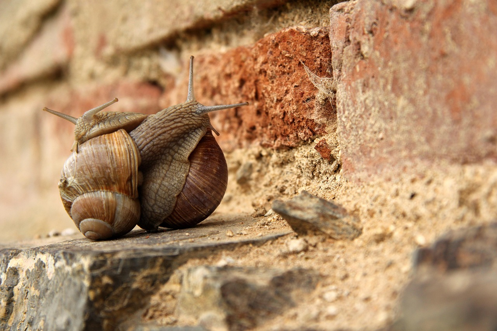
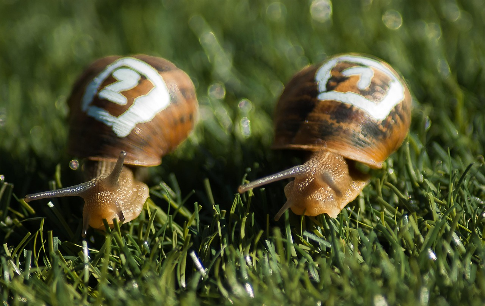
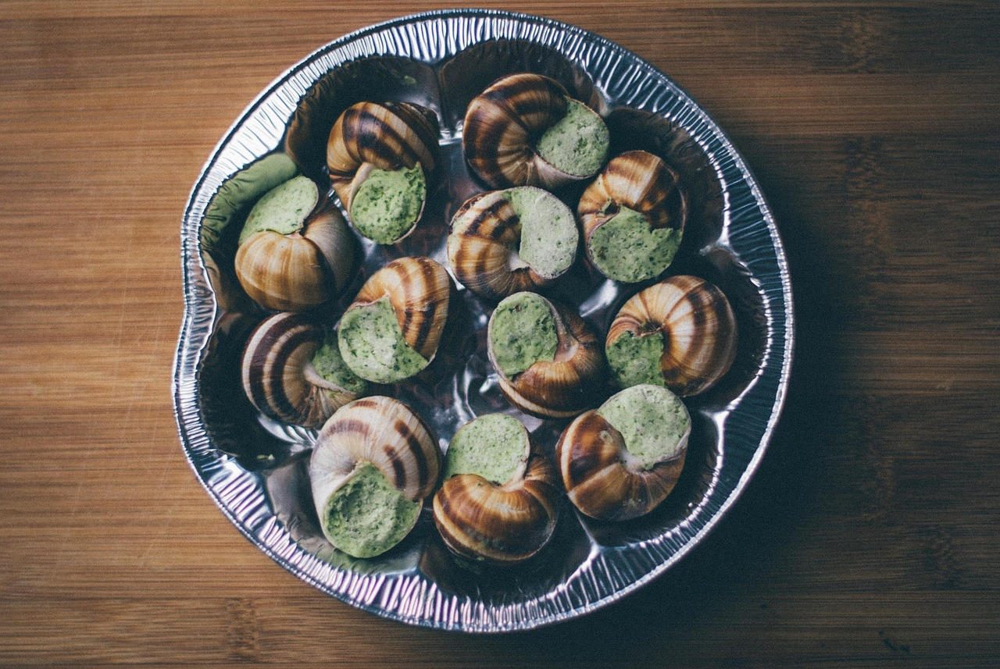

Sou o Marcos nascido em 1984 e criado no ABC Paulista,
gosto de pensar que tenho um lado artístico retraído.
Adoro música clássica, escrever, ler, tocar(violão).
Sou solitário por natureza, e com a cara que Deus me deu.
Me interesso por eletrônica e programação, e esses espaço
serve um pouco para unir um hobby com conhecimento
de mercado.

Olá meus queridos senhores e senhoras. Bem vindos a minha mente
nada brilhante.

Hoje é um novo dia, mas amanhã poderá não ser mais, sorria!

Lutamos a luta que podemos, e no fim, somos o que somos.
Bestiais, meus dias são bestiais.
Me equivoco em classificar minha vida, sem
mais saber o quanto dela me resta. Cada linha
escrita rasga meu peito como um homem de peles
infinitas, quais as camadas são de pura ignorância
e esperança de um dia encontrar a verdade. Hoje faz frio.
Mas gélidas são as aguas dos rios que levam embora minhas
lembranças, minha pequenes de mal saber os riscos que uma mente
infantilizada pelo remorso de ser quem sou, e se desesperar pela
falta de caminho, que pode trazer ao habitat de sua alma. Em cânticos,
em solavancos de inesperados momentos de pura felicidade, se abre a
ternura de uma lembrança materna e a vontade de ser alguém.
Marcos de Paula Moser
Santo André -SP
Estive em sonhos alheios a vontade pujante de ser menor.
Menor que a gravidade da terra e poder voar entre vales e florestas,
mas assim que acordo sou só mais um habitante, um errante com cara de
quem não sabe o que diz. As vezes não sei o que digo ou porque dizer
algo quando o silêncio e a ausência da própria estranheza de se ter
vontade de aprender a dizer o que é certo. Como a certeza da chuva
que chega de tempos em tempos, para lembrarmos de nossos erros do passado.
E de segredos guardados, na angústia da memória da decisão mal tomada.
Pois só queria ouvir sua voz, e no escuro estou, sem sonhos nem certezas,
e sim com muitas angústias, que vem de meus sonhos e certezas ironicamente.
Não quero agora vigiar suas vontades, que sejas livre como um pássaro.
Que pousa na minha varanda, só pra me ver sonhar acordado. É que o mundo
não me dá espaço de ser mais que um pensamento em compasso da certeza de
um dia estarmos juntos. De peito aberto, e coração aflito, pois só se
perde o que se tem, e se temos um ao outro, cada momento nos pertence
tanto do passado como do presente, que desperte na razão pura só
motivos para estarmos juntos, e que a incerteza do futuro se torne
o sonho incontrolável, possível e realizável. Quando decidir deixar
minha varanda de pensamentos e entrar escolhendo minha estada
como seu lugar para o futuro e além, saber que não há mais com
quem eu ainda possa estar, permanecer e dentro do seu peito descansar.
Eu você e mais quem entre nós não possa faltar.
Marcos de Paula Moser
Santo André - SP
<<<<<<< HEAD
A vida é uma máquina e a máquina é a vida.
Dispomos de tudo que somos para parecer algo que desejamos.
Se o desejo de quem importa é o desejo de nós mesmos.
Nos tornamos macacos em uma guerra contra o que não entendemos.
Arranhamos os céus de um céu que não nos quer mais.
E atravessamos a porta dos sonhos embriagados de uma ilusão de controle e sentimento.
A realidade sempre foi brutal. E o sentido do real submerge em um oceano de estímulos.
Se quero saber quem sou. Ser, é meu próximo desejo para sempre.
Marcos de Paula Moser
Santo André - SP
O castelo do leão é construído pelas paredes do medo.
No qual ele anda por pequenos orifícios como um camundongo, tentando sobreviver
às ilusões pintadas com tinta de um coração materno.
Fala sozinho em libras com sua consciência pois é surdo para a música do universo que fura
seu ego como uma faca e te faz sentir o peso do lamento dos anjos, nos atingindo com um tapa
de um urso, pois embutido em nosso sofrimento também está o carinho de Cristo vestido de mulher.
Clarificado como a pureza da água a vergonha e a dor, em dar razão aos porquês do inimigo
a insatisfação de sermos menores.
O medo da hipótese divina de transcender os limites de nossa noção do que é possível,
ao pousar os olhos na imagem escrita da filosofia esculpida no trono de César,
o pássaro zombeteiro, regulando a escassez de um talento miserável,
de explorar as novidades em salas inéditas na rota ao eterno início.
O medo é um segredo que nos espera após a vida, manipulado por um sentimento de vingança
em saber que tudo que alcançamos é apenas uma gaiola maior.
Marcos de Paula Moser
Santo André - SP
=======
A vida é uma máquina e a máquina é a vida.
Dispomos de tudo que somos para parecer algo que desejamos.
Se o desejo de quem importa é o desejo de nós mesmos.
Nos tornamos macacos em uma guerra contra o que não entendemos.
Arranhamos os céus de um céu que não nos quer mais.
E atravessamos a porta dos sonhos embriagados de uma ilusão de controle e sentimento.
A realidade sempre foi brutal. E o sentido do real submerge em um oceano de estímulos.
Se quero saber quem sou. Ser, é meu próximo desejo para sempre.
Marcos de Paula Moser
Santo André - SP
>>>>>>> 7c577b7cb026ef42ed2f42d6327f7a8769e8f103